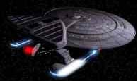

crew manifest | technical information | images
 |
USS SUTHERLAND
NCC-72015
|
The Nebula Class of
Star Ship was a direct offshoot from the Galaxy Class project started in
2343. Starfleet,
after viewing the potenital that
the Galaxy class project was offering decided to build a further class
of ship
based on the Galaxy Class ship.
The specific idea that was liked by Starfleet was that a universal drive
section
to be built for emergency transportation.
The Galaxy Class drive section was overly large and although very
efficient at what it did, it was
hard to rebuild. They needed a method of transporting a non warp capable
saucer section and the brief was
decided to build a small drive section using existing
Galaxy class components
that would be able to attach to
a standard saucer section. |
TECHNICAL
INFORMATION
Officer Crew: 120
Enlisted Crew: 340
Maximum Capacity: 1900 Standard (No Mission Module)
Number of Decks: 33
Height: 75 Meters Width: 467 Meters Length: 421.5 Meters
Computer System: LCARS
Expected Duration: 100 Years
Times Between Resupply: 5 Years
Times Between Refits: 5 Years
Weapons: 5 Phaser Banks, 2 Photon/Quantum Torpedo Lnchr
Special Design Features: The large upper modual at the back of the
ship can be customized for differant mission specifications. For example,
for a combat mission, another phaser array or photon torpedo launcher could
be added. For
an evacuation mission, additional personnel quarters could be built
in, etc. Much of this is only done on the Nebula-class because the modifications
can be done with little cost and structural difficulties.

IMAGES
 |

Click on the Image to Enlarge |
Here's the Prometheus viewing the anomoly from Federation Space.
Image by Mark Kingsnorth of The
Behavior Group's Starfleet Galaria. Visit their site for more
great renderings.